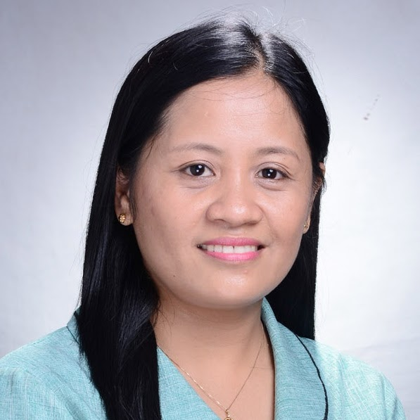
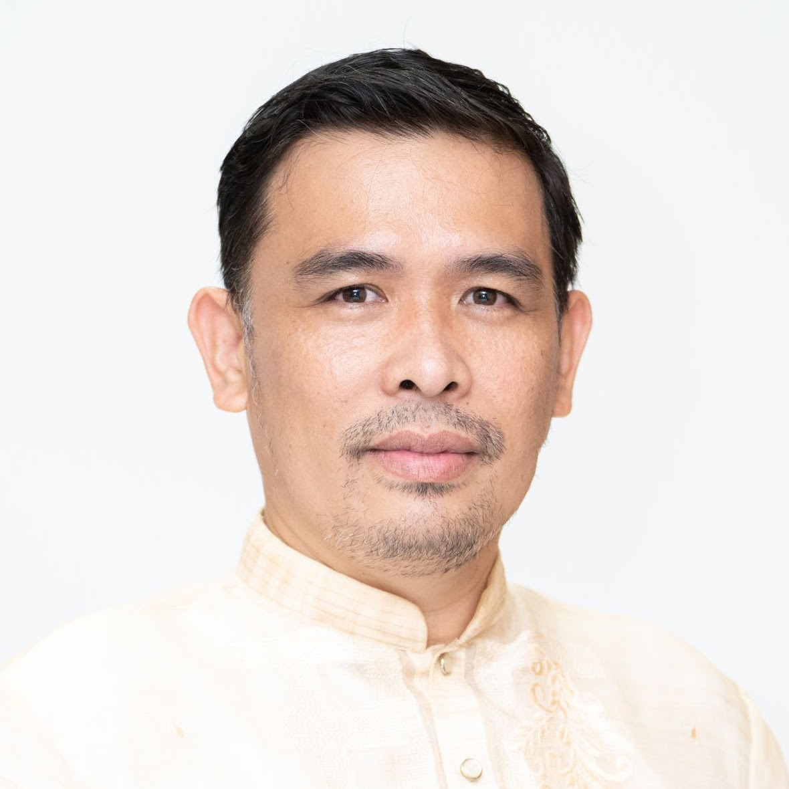

BS Civil Engineering
FERDINAND D. TABLIGAN, RCE, M.Eng.
Content to be published soon...

BS Computer Engineering
MELOJEAN C. MARAVE, LPT, MSIT
Engr. Melojean C. Marave has an extensive educational background,
including a Doctorate in Information Technology from the Technological Institute
of the Philippines and a Doctor of Education Major in Educational Management from
Ramon Magsaysay Technological University, Iba Campus. She holds a Master of Science
in Information Technology from the Polytechnic University of the Philippines –
Sta. Mesa, Manila. Additionally, she completed a Post-Baccalaureate Certificate
in Professional Education at Ramon Magsaysay Technological University Main Campus
Iba, Zambales, and a Trade Course in IT Course Design and Development from the
National Computer Center, National Computer Institute, Diliman Q.C. Engr. Marave
finished CISCO Certified Network Associate Exploration 1, 2, 3, and 4 modules
from UP Information Technology Training Center, UP Diliman Q.C. She earned her
Bachelor of Science in Computer Engineering in October 2001. Engr. Marave
currently serves as the BS Computer Engineering Program Chairperson at PRMSU
Iba, Zambales, and has been actively involved in various faculty and extension
roles within the university, with a special highlight on community extension.
She is a licensed professional teacher and holds professional memberships with
Colleges and Universities in the Philippines and the Institute of Computer
Engineers of the Philippines as a Professional Member. An Accreditor of the
Accrediting Agency of Chartered Colleges and Universities in the Philippines
(AACCUP) and Internal Auditor of the International Standard Organization (ISO).
Additionally, she has contributed significantly to youth leadership programs and
has received recognition for her outstanding contributions and leadership.

BS Mechanical Engineering
MARLON JAMES A. DEDICATORIA, RMEE, Ph.D.
Dr. Marlon James A. Dedicatoria is a licensed mechanical engineer and
currently serves as the Vice President for Research and Development, as well as
the Chairperson of the Mechanical Engineering Program at President Ramon Magsaysay
State University (PRMSU) in Iba, Zambales. With over ten years of teaching
experience, he has been instructing professional courses within the Bachelor of
Science in Mechanical Engineering (BSME) program at PRMSU's College of Engineering.
Additionally, he holds a lecturing position at the university's graduate school,
where he teaches mathematics courses.
Dr. Dedicatoria earned his Bachelor of Science degree in Mechanical Engineering
from Ramon Magsaysay Technological University in 2006. Subsequently, he pursued
his Master of Science in Mechanical Design and Systems Engineering at Andong
National University, South Korea, graduating in 2010. He furthered his academic
pursuits by completing his PhD in Mechanical Design and Systems Engineering from
Andong National University in 2013. Following his doctoral studies, he served as
a post-doctoral fellow at the same university's Materials Behavior Evaluation
Laboratory under the guidance of Prof. Hyung-Seop Shin from 2013 to 2014.
His research publications primarily focus on the electromechanical property
evaluation of high-temperature superconductors. Presently, Dr. Dedicatoria holds
the position of Professor 3 at PRMSU.
BS Electrical Engineering
GILBERT D. DEBOMA, REE, M.Eng.
Engr Gilbert D. Deboma is a faculty of the College of Engineering for
24 years with an Academic Rank of Associate Professor V. He is a graduate of
Bachelor of Science in Electrical Engineering at Technological Institute of the
Philippines – Quezon City. He finished his Master of Science in Electronics
Engineering at Andong National University – South Korea. He is currently taking
up PhD in Agricultural Engineering at Central Luzon State University. Engr Deboma
is an active member of the Institute of Integrated Electrical Engineers, Inc.,
the accredited professional organization of electrical practitioners of the
Philippines. He is the current dean of the College of Engineering and concurrent
Program Chairperson of the Electrical Engineering Department.
BS Mining Engineering
DOROTHY JOYCE SOLPICO DESIERTO
Content to be published soon...